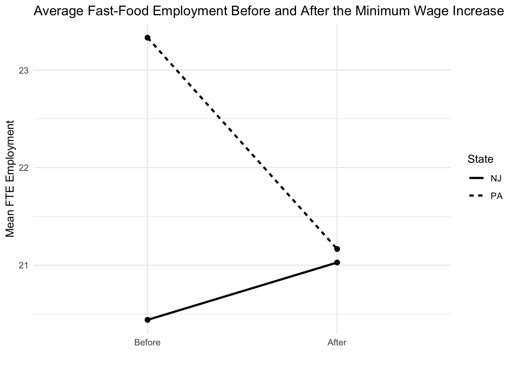

| state_name | Wave 1 FTE employment | Wave 1 starting wage | Wave 1 hours open | Wave 2 FTE employment | Wave 2 starting wage | Wave 2 hours open |
|---|---|---|---|---|---|---|
| NJ | 20.44 | 4.61 | 14.42 | 21.03 | 5.08 | 14.42 |
| PA | 23.33 | 4.63 | 14.53 | 21.17 | 4.62 | 14.65 |
Replication of Card & Krueger (1994)
Minimum Wages and Employment: A Case Study of the Fast-Food Industry in New Jersey and Pennsylvania
Introduction
Card and Krueger (1994) study a basic question in labor economics: does raising the minimum wage reduce employment? In 1992, New Jersey increased its minimum wage from $4.25 to $5.05 per hour, while nearby Pennsylvania did not. This policy change gives the authors a way to compare fast-food restaurants in the two states and see whether employment changed after the wage increase.
This question matters because the usual prediction from standard economic theory is that a higher minimum wage should lead firms to hire fewer workers, especially in low-wage industries. Fast-food restaurants are a useful setting for studying this issue because they employ many low-wage workers and are likely to be directly affected by changes in minimum wage policy. The authors collected survey data from restaurants in New Jersey and eastern Pennsylvania before and after the policy change to measure employment outcomes.
The main idea of the paper is to compare the change in employment in New Jersey to the change in employment in Pennsylvania over the same period. This is a difference-in-differences approach. If the two states would have followed similar trends without the policy change, then the difference between those two changes can be interpreted as the effect of the higher minimum wage. In this replication, I focus on reproducing one of the paper’s main findings and then add a simple graph to show the employment patterns more clearly.
Main Analysis
The key statistical finding I replicate is the paper’s main result that employment did not fall in New Jersey relative to Pennsylvania after the minimum wage increase. In the paper, this shows up in the difference-in-differences comparison in Table 3 and in the reduced-form regression in Table 4, column (i). These are the main results I focus on below.
For the main analysis, I try to match the tables in Card and Krueger (1994) as closely as possible using the public replication data. Following the paper, I measure employment as full-time-equivalent employment (FTE), which counts full-time workers and managers fully and counts part-time workers as one-half. Then I use those variables to reproduce part of Table 2, the first three rows and first three columns of Table 3, and column (i) of Table 4.
Load the data
Construct the main variables
I use the same basic employment measure as the paper:
- FTE before = full-time workers + managers + 0.5 × part-time workers
- FTE after = full-time workers + managers + 0.5 × part-time workers in wave 2
For Table 3, the paper sets employment equal to zero for permanently closed stores in wave 2, so I do the same.
Part of Table 2
I report a few of the most important entries: FTE employment, starting wage, and hours open in wave 1 and wave 2, separately for New Jersey and Pennsylvania.
These numbers reproduce the main pattern in Table 2. In particular, starting wages in New Jersey rise sharply between wave 1 and wave 2, while employment does not fall relative to Pennsylvania.
Table 3: rows 1–3 and columns 1–3
Next I reproduce the exact part of Table 3. The rows are FTE employment before, FTE employment after, and the change in mean FTE employment. The columns are Pennsylvania, New Jersey, and the difference between New Jersey and Pennsylvania.
| Variable | PA | NJ | Difference (NJ - PA) |
|---|---|---|---|
| 1. FTE employment before, all available observations | 23.33 | 20.44 | -2.89 |
| 2. FTE employment after, all available observations | 21.17 | 21.03 | -0.14 |
| 3. Change in mean FTE employment | -2.17 | 0.59 | 2.75 |
The most important number here is the last entry in the third row, which is the difference-in-differences estimate. That value shows whether employment changed more in New Jersey than in Pennsylvania after the minimum wage increase.
Table 4, column (i)
Finally, I reproduce column (i) of Table 4. In the paper, this is a reduced-form regression where the dependent variable is the change in FTE employment and the main explanatory variable is a New Jersey dummy.
To stay close to the paper, I use the sample of stores with valid employment data and valid wage information in both waves, plus stores that permanently closed in wave 2.
| Term | Coefficient | Std. Error |
|---|---|---|
| New Jersey dummy | 2.33 | 1.19 |
This coefficient is the reduced-form estimate of the minimum wage effect in the simplest regression specification. If the estimate is positive, it means employment rose more in New Jersey than in Pennsylvania, which goes against the basic prediction that a higher minimum wage must reduce employment.
Discussion
The main statistical finding in Card and Krueger (1994) is that the increase in New Jersey’s minimum wage did not reduce fast-food employment relative to Pennsylvania. My replication focuses on that result in two ways: first, by reproducing the difference-in-differences comparison in Table 3, and second, by reproducing the reduced-form regression in Table 4, column (i).
Looking at the replicated Table 3 results, the key number is the difference-in-differences estimate in the third row and third column. That number shows whether employment changed differently in New Jersey than in Pennsylvania after the policy change. The replicated Table 4 regression gives the same basic test in regression form through the coefficient on the New Jersey dummy.
So yes, this section does replicate a key statistical finding from the paper, not just descriptive numbers. The point of the replication is to check whether the data support the standard prediction that a higher minimum wage reduces employment. Like the original paper, the results show that employment in New Jersey does not fall relative to Pennsylvania after the minimum wage increase.
Something Additional
I graph the average level of employment before and after the minimum wage increase in New Jersey and Pennsylvania. The original paper mainly presents its main result in table form, so showing the same pattern graphically makes it easier to see what drives the difference-in-differences estimate. I also briefly explain why the difference-in-differences design can be used to make a causal claim in this setting.
Graphing the main result

The graph shows the same basic result as the tables. Employment in New Jersey does not fall relative to Pennsylvania after the minimum wage increase. In other words, the visual pattern is consistent with the paper’s main finding that the policy did not reduce employment in this sample.
Why the difference-in-differences design can be interpreted causally
The main empirical strategy in the paper is difference-in-differences. The idea is to compare how employment changed in New Jersey before and after the policy, and then subtract the change in Pennsylvania over the same period. Pennsylvania acts as a control group because its minimum wage did not change at that time. If employment in the two states would have followed similar trends in the absence of the policy change, then the remaining difference can be interpreted as the effect of the minimum wage increase.
This is useful because simply comparing New Jersey and Pennsylvania at one point in time would not be enough. The two states may already differ for many reasons, such as store size, local demand, or business conditions. Likewise, just looking at New Jersey before and after the law would also be incomplete, because employment could change over time for reasons unrelated to minimum wage policy. The difference-in-differences approach removes those two simpler sources of bias by comparing changes over time across both states.
Of course, this interpretation depends on an important assumption: without the minimum wage increase, employment trends in New Jersey and Pennsylvania would have been similar. Card and Krueger argue that eastern Pennsylvania is a reasonable comparison group for New Jersey because the states are geographically close and the fast-food industry is similar across the two areas. That is why the difference-in-differences estimate is central to the paper’s causal argument.
Conclusion
This replication reproduces the main result in Card and Krueger (1994): the increase in New Jersey’s minimum wage does not appear to reduce fast-food employment relative to Pennsylvania. The difference-in-differences comparison in Table 3 and the reduced-form regression in Table 4, column (i), both point in the same direction.
My estimates may not match the published numbers exactly because of small differences in sample handling or missing observations, but the overall conclusion is the same. The additional graph also makes the result easier to see visually. Overall, this replication shows why the paper became so influential in labor economics: its findings challenge the simple prediction that higher minimum wages must reduce employment.